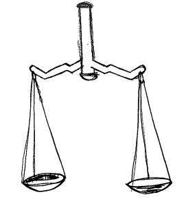

1 Gleichungen
Eine Gleichung ist wie eine Waage: Links und rechts ist gleich viel.
Was du auf einer Seite änderst, musst du auch auf der anderen Seite ändern.

So bringst du eine Zahl auf die andere Seite
Aus + wird −
x + 4 = 7
x = 7 − 4
x = 3
Aus − wird +
x − 4 = 7
x = 7 + 4
x = 11
Aus · wird :
3 · x = 21
x = 21 : 3
x = 7
Aus : wird ·
x : 4 = 3
x = 3 · 4
x = 12
Zeichen: · heißt „mal“, : heißt „geteilt durch“.
Aufgabe 1
Rechne x aus.
| x + 5 = 9 | x = |
| x − 6 = 2 | x = |
| 4 · x = 20 | x = |
| x : 2 = 6 | x = |
Aufgabe 2
Rechne in zwei Schritten. Zuerst + oder − wegbringen, dann · oder :.
3 · x + 2 = 11
| 1. Schritt: | 3 · x = |
| 2. Schritt: | x = |
10 : x + 7 = 17
Achtung: Hier steht x hinter dem „:“. Dann tauschen x und das Ergebnis den Platz: Aus 10 : x = 5 wird x = 10 : 5.
| 1. Schritt: | 10 : x = |
| 2. Schritt: | x = |